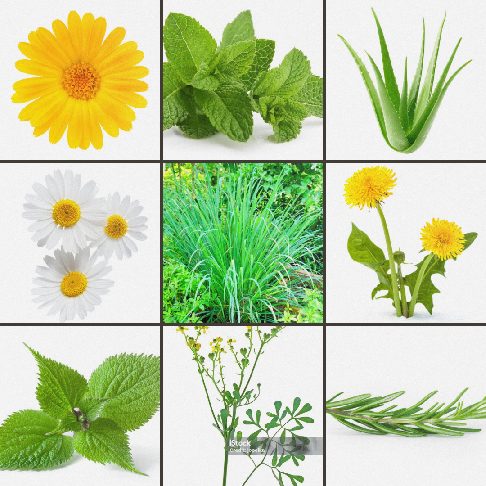

¿Que son las plantas nativas?
Las plantas nativas son aquellas que se han desarrollado en una región específica durante un largo periodo, adaptándose a las condiciones ambientales locales. Son cruciales para la biodiversidad, ya que proporcionan hábitats y recursos para diversas especies.
Estas plantas son más resistentes a plagas y enfermedades locales y tienen un papel importante en la cultura y economía de las comunidades.